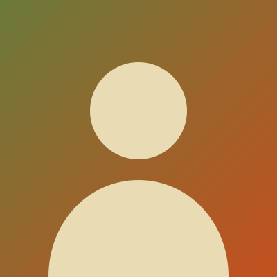

GSAP ScrollTrigger ile kaydırdıkça canlanan sayfalar
Bu sitede kaydırdıkça kelimeler koyulaşıyor, çizgiler kendini çiziyor, bölümler bir süre yerinde çivili kalıyor. Hepsinin arkasında dört parça var: Lenis senkronu, pin, scrub ve stroke-dashoffset ile çizilen SVG. Bu yazıda her birini sitenin kendi kodundan örnekle anlatıyorum.

· 4 dk okumaScrollTrigger, GSAP'ın bir eklentisi. Yaptığı iş aslında basit: bir animasyonu zamana değil, kaydırma konumuna bağlıyor. “Bu bölümün üstü ekranın ortasına geldiğinde başla, altı ekranın üstünden çıkınca bitir” diyorsun; gerisini o hesaplıyor. Zor olan kısım API değil, hangi efektin ne zaman kullanılacağına karar vermek.
Önce zemin: Lenis ile aynı saate bağlanmak
Sitede yumuşak kaydırma için Lenis kullanıyorum. Lenis kendi requestAnimationFrame döngüsünü çalıştırır, GSAP de kendi döngüsünü. İki ayrı saat olunca ScrollTrigger konumu bir kare geç okur ve pinlenen bölümler hafifçe titrer. Çözüm: Lenis'i GSAP'ın ticker'ına bağlamak, yani tek bir saat kullanmak.
// Lenis ile ScrollTrigger aynı saatte çalışsın
const lenis = new Lenis({
duration: 1.15,
easing: (t) => Math.min(1, 1.001 - Math.pow(2, -10 * t)),
smoothWheel: true,
});
// her Lenis kaydırmasında ScrollTrigger konumları günceller
lenis.on("scroll", ScrollTrigger.update);
// tek döngü: GSAP'ın ticker'ı Lenis'i de sürer
gsap.ticker.add((time) => lenis.raf(time * 1000));
gsap.ticker.lagSmoothing(0);lagSmoothing(0) satırı küçük ama önemli: GSAP normalde uzun bir takılmadan sonra zamanı “yumuşatır”. Kaydırmaya bağlı animasyonda bunu istemiyoruz; kaydırma nerede ise animasyon da orada olmalı.
pin: sahneyi yerine çivilemek
Ana sayfadaki “Neden çiziyorum?” bölümü kaydırmaya başladığında ekrana çivilenir. Sayfa aşağı inmez; bunun yerine metindeki kelimeler sırayla soluk griden koyu mürekkebe döner, bazı kelimelerin etrafına daire, altına çizgi çizilir. Bölüm ancak bu “okuma” bittiğinde serbest kalır.
opacity: 0.13.const tl = gsap.timeline({
scrollTrigger: {
trigger: ".home-manifesto",
start: "top top", // bölümün üstü ekranın üstüne değince
end: "+=160%", // 1,6 ekran boyu kaydırma boyunca
pin: true, // bölüm yerinde çivili kalır
scrub: 0.6, // animasyon kaydırmayı 0,6 sn gecikmeyle izler
},
});
// kelimeler sırayla soluktan koyuya
tl.fromTo(words, { opacity: 0.13 }, { opacity: 1, stagger: 0.1, ease: "none" });end: "+=160%" şu demek: pin, başladığı yerden itibaren ekran yüksekliğinin 1,6 katı kadar kaydırma sürer. ScrollTrigger bu süre için sayfaya otomatik boşluk (pinSpacing) ekler; böylece pin bitince alttaki bölüm üst üste binmeden gelir.
scrub: true mu, sayı mı?
scrub: true animasyonu kaydırmaya birebir kilitler; tekerleği bıraktığın an animasyon da durur. scrub: 0.6 ise animasyonun kaydırmayı 0,6 saniyede “yakalamasını” sağlar. Bu küçük gecikme, kalemle yazılan mürekkebin kağıda yayılması gibi yumuşak bir his veriyor. Metin animasyonlarında 0.5–1 arası, paralaks gibi arka plan işlerinde true kullanıyorum.
stroke-dashoffset: kendini çizen SVG
Sitedeki karalama daireler, alt çizgiler ve footer'daki dalga aynı numarayla çiziliyor. Bir SVG çizgisine kesikli çizgi deseni (stroke-dasharray) verip deseni kaydırırsan (stroke-dashoffset), çizgi görünmezden tam görünüre “akıyormuş” gibi görünür.
function prepDraw(svg) {
const shapes = svg.querySelectorAll("path, line, circle, rect");
shapes.forEach((s) => {
s.setAttribute("pathLength", "1"); // gerçek uzunluk ne olursa olsun: 1
s.style.strokeDasharray = "1 2"; // 1 birim çizgi, 2 birim boşluk
s.style.strokeDashoffset = "1.01"; // çizgi tamamen boşluğa kaydı
});
return shapes;
}
gsap.to(prepDraw(svg), { strokeDashoffset: 0, duration: 1.4, ease: "power2.inOut" });Buradaki püf noktası pathLength="1". Normalde her yolun uzunluğunu getTotalLength() ile ölçmen gerekir. pathLength tarayıcıya “bu yolun uzunluğunu 1 kabul et” der; artık her şekil için aynı sayılarla çalışabilirsin. Boşluğun 2 olması, çizgi kayarken bir sonraki tekrarın ucunun görünmemesi için. 1 yerine 1.01 ise yuvarlak çizgi ucunun (stroke-linecap: round) başta küçük bir nokta olarak kalmasını engelliyor.
Bu fonksiyon bir kez yazılınca HTML'de tek bir öznitelikle kullanılıyor. Footer'daki dalga, kaydırmaya bağlı (scrub) çiziliyor:
<svg class="footer__wave" viewBox="0 0 1200 60" aria-hidden="true"
data-draw="scrub" data-start="top 95%" data-end="top 50%">
<path d="M0 30 C 100 5, 200 55, 300 30 S 500 5, 600 30 ..."/>
</svg>markers: körlemesine ayar yapma
start ve end değerlerini kafadan ayarlamaya çalışmak zaman kaybı. Geliştirirken markers: true ekle; ScrollTrigger ekrana dört etiket çizer. Yeşiller başlangıç, kırmızılar bitiş. “scroller” etiketleri ekrandaki çizgiyi, diğerleri tetikleyici öğedeki noktayı gösterir. İkisi üst üste geldiği an animasyon başlar.
ScrollTrigger.create({
trigger: ".home-stats",
start: "top 75%", // öğenin üstü, ekranın %75'ine gelince
end: "bottom 25%",
markers: true, // yayına çıkmadan önce sil!
});Telefon ve hareket hassasiyeti
Pin masaüstünde etkileyici ama telefonda başparmağın altında takılmış gibi hissettirebiliyor. Bu yüzden gsap.matchMedia() ile iki ayrı senaryo kuruyorum: 768 pikselden genişse pin var, değilse aynı animasyon pin olmadan, normal akışta oynuyor. Ekran boyutu değişince GSAP eski senaryoyu temizleyip yenisini kendisi kuruyor.
const mm = gsap.matchMedia();
mm.add({ desk: "(min-width: 768px)", mob: "(max-width: 767px)" }, (ctx) => {
const { desk } = ctx.conditions;
gsap.timeline({
scrollTrigger: {
trigger: sec,
start: desk ? "top top" : "top 75%",
end: desk ? "+=160%" : "bottom 45%",
pin: desk, // telefonda pin yok: içerik normal akar
scrub: 0.6,
},
});
});Bir de işletim sisteminde “hareketi azalt” ayarını açan kullanıcılar var. Onlar için kural net: prefers-reduced-motion: reduce ise hiçbir ScrollTrigger kurulmuyor, her şey son haliyle, okunur biçimde görünüyor. Animasyon süs; içerik herkesin.
Kısaca
- Lenis kullanıyorsan GSAP ticker'ına bağla; tek saat, titreme yok.
pinsahneyi sabitler,end: "+=160%"ne kadar süreceğini söyler.- Metinde
scrub: 0.6gibi küçük bir gecikme,true'dan daha doğal hissettirir. pathLength="1"+dasharray "1 2"= ölçmeden çizim.- Telefonda pin'i kapat, hareket azaltmada animasyonu tamamen atla.